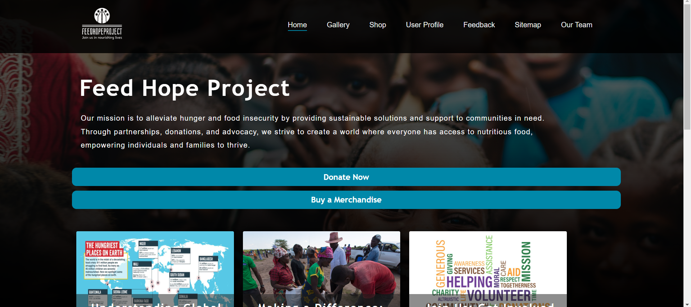

Here, I share my journey in coding, personal projects and my thoughts on technology.
FeedHopeProject: My First Web Application
Posted on
During my first year at university, I developed FeedHopeProject, an hypothetical application to collect donations for children in Africa. Using JavaScript, HTML, and CSS, I built a responsive interface. This experience taught me foundational front-end skills and sparked my interest in full-stack development. I’m excited to keep expanding this project, exploring frameworks, and enhancing its functionality!

General Blogs
Why I Love Coding and Problem Solving
Posted on
Coding has always fascinated me because it feels like solving a puzzle. Every problem is a challenge that drives me to think creatively and logically. In choosing Computer Science, I sought a field where I could bring ideas to life and continually push the boundaries of what’s possible through technology. This passion for problem-solving has shaped my journey, especially as I delve into areas like software development.
Throughout my studies, I’ve had the opportunity to work on a range of projects, from small personal experiments to larger applications. Each project has helped me refine my skills and understand the significance of user-centric design, code efficiency, and adaptability. Tackling complex challenges in these projects has not only expanded my technical abilities but has also deepened my commitment to making impactful solutions through technology.
Exploring the World of Open Source: My Journey So Far
Posted on
Open source software has always been a curiosity for me, but I wasn’t sure how to start contributing until recently. Diving into the open-source community has opened up a world of possibilities, collaboration, and growth. There’s a unique thrill in building something that people all over the world might use and adapt to their needs, and it’s inspired me to look deeper into the values of transparency and innovation.
My first contribution was small: fixing a bug in a library that I had used in a personal project. But that small step turned into a larger commitment, as I found myself exploring other projects and gradually taking on more complex tasks. This experience taught me how to work with unfamiliar codebases, understand and respect diverse coding standards, and effectively communicate with experienced developers. Through open source, I’m constantly learning, and it’s amazing to think that I’m part of something that anyone, anywhere, can build upon.